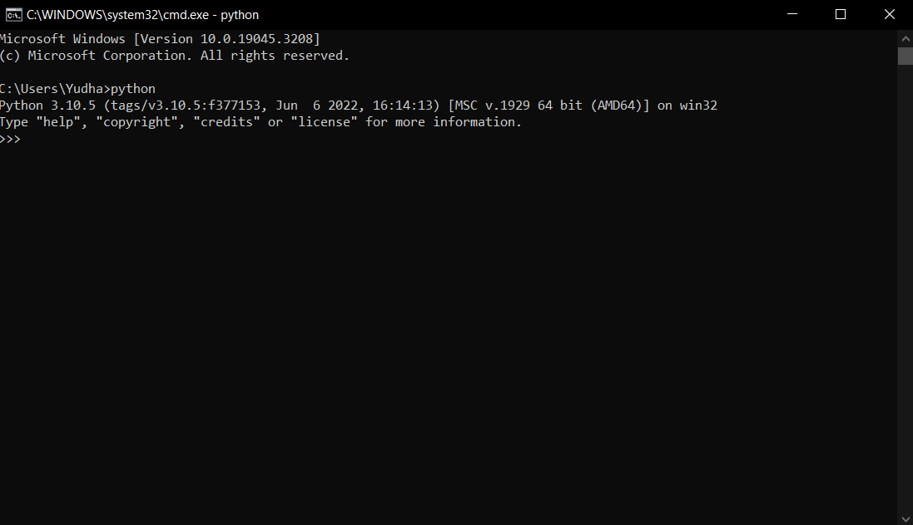
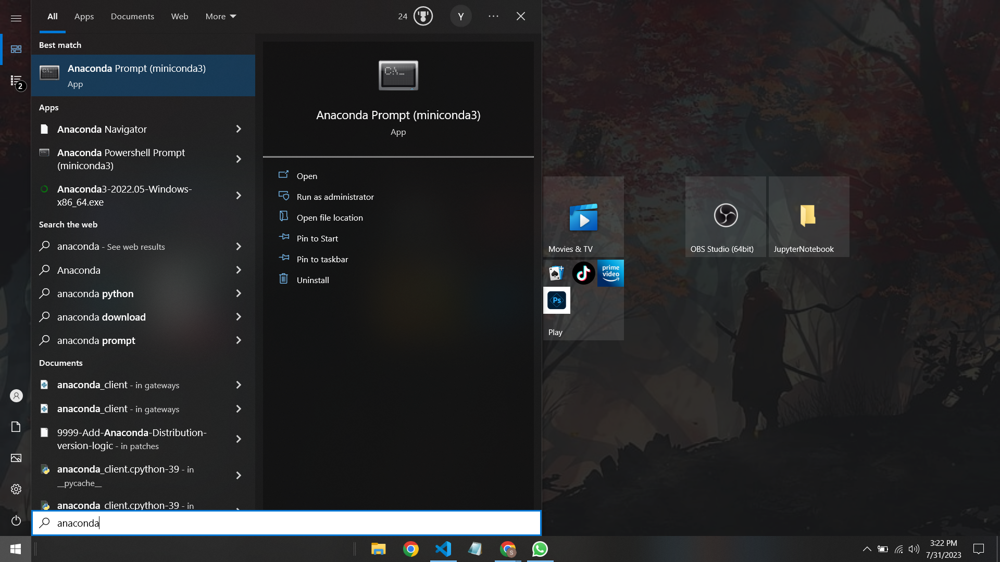
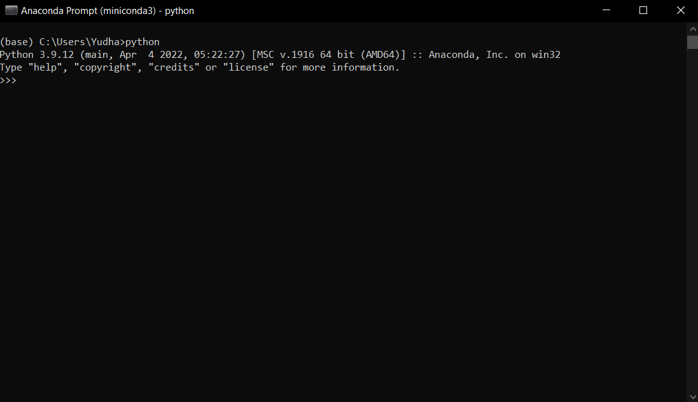
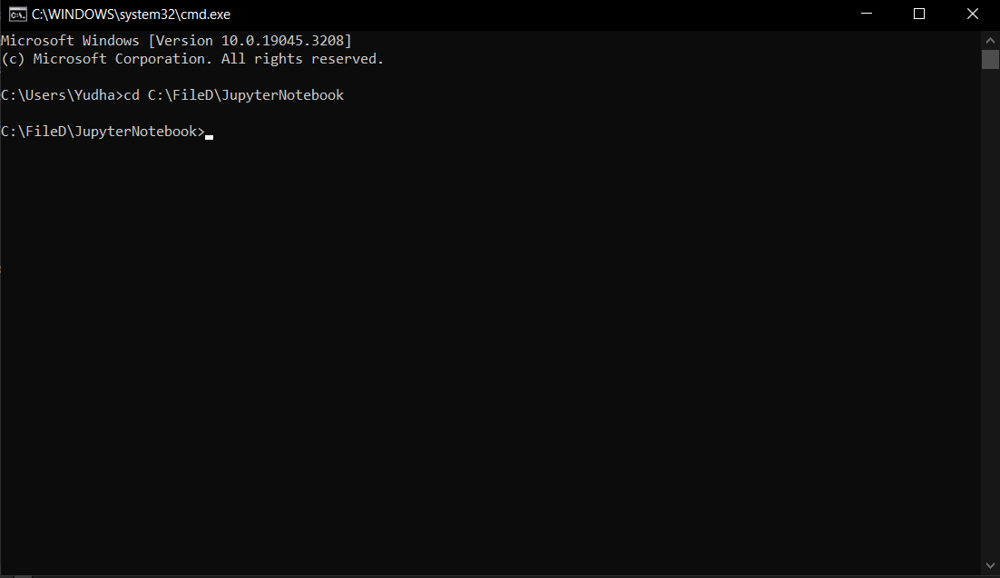
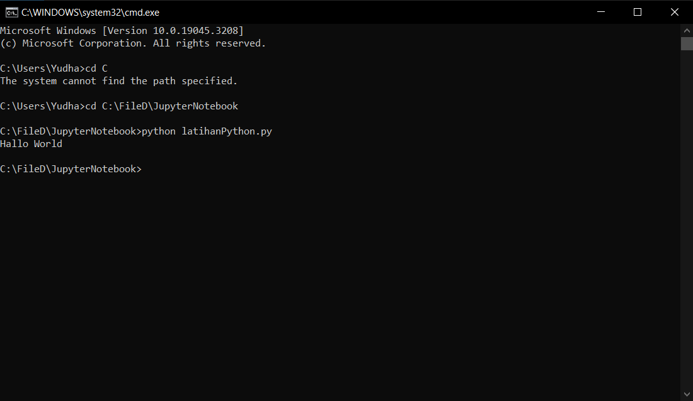
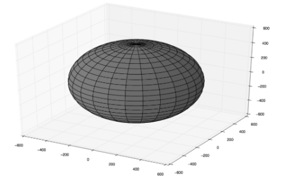

2 Python
A. Dasar-dasar Python
Apa itu Python?
Python adalah bahasa pemrograman tingkat tinggi yang populer. Bahasa ini dapat menangani berbagai tugas pemrograman seperti komputasi numerik, pengembangan web, pemrograman basis data, pemrograman jaringan, pemrosesan paralel, dan lainnya.
Python populer karena berbagai alasan, termasuk:
- Bahasa ini gratis.
- Tersedia di semua sistem operasi populer seperti Windows, Mac, atau Linux.
- Python adalah bahasa yang diinterpretasikan. Oleh karena itu, pemrogram dapat menguji bagian kode di baris perintah sebelum menggabungkannya ke dalam program mereka. Tidak ada kebutuhan untuk kompilasi atau penghubungan. Python memungkinkan pemrograman yang lebih cepat.
- Python lebih sederhana secara sintaksis dibandingkan dengan C/C++/Fortran. Oleh karena itu, Python sangat mudah dibaca dan lebih mudah untuk debug.
- Python datang dengan berbagai modul yang standar atau dapat diinstal dalam instalasi Python yang ada. Modul-modul ini dapat melakukan berbagai tugas seperti membaca dan menulis berbagai file, komputasi ilmiah, visualisasi data, dan lainnya.
- Program yang ditulis dalam Python dapat dijalankan di berbagai sistem operasi atau platform dengan sedikit atau tanpa perubahan.
- Python adalah bahasa yang dinamis dalam pengetikannya. Oleh karena itu, tipe data dari variabel tidak harus dinyatakan sebelum penggunaannya, membuatnya lebih mudah untuk orang dengan pengalaman coding yang kurang.
- Python memiliki komunitas pengembang dan pengguna yang berdedikasi dan selalu diperbarui.
Meskipun Python memiliki banyak keunggulan yang membuatnya menjadi salah satu bahasa yang diinterpretasikan paling populer, Python memiliki beberapa kelemahan yang dibahas di bawah ini:
- Karena fokus Python adalah pada kemampuan untuk pemrograman yang lebih cepat, kecepatan eksekusi menderita. Program Python mungkin 10 kali atau lebih lambat (misalnya) dibandingkan dengan program C yang setara, tetapi program Python akan berisi lebih sedikit baris kode dan dapat diprogram untuk menangani berbagai jenis data dengan mudah. Kelemahan ini dalam kode Python dapat diatasi dengan mengubah bagian kode yang intensif secara komputasi ke C/C++ atau dengan penggunaan struktur data dan modul yang tepat.
- Indentasi kode tidak opsional. Ini membuat kode mudah dibaca. Namun, kode dengan loop dan konstruk lainnya akan diindentasi ke kanan, membuatnya sulit untuk membaca kode.
Lingkungan Python
Terdapat beberapa lingkungan Python yang dapat dipilih. Beberapa sistem operasi seperti Mac, Linux, Unix, dan lainnya memiliki interpreter bawaan. Interpreter tersebut mungkin mengandung semua modul tetapi tidak siap pakai untuk komputasi ilmiah. Distribusi khusus telah dibuat dan dijual kepada komunitas ilmiah, dibangun sebelumnya dengan berbagai modul ilmiah Python. Saat menggunakan distribusi ini, pengguna tidak perlu menginstal modul ilmiah secara individual. Jika modul tertentu yang diminati tidak tersedia dalam distribusi, modul tersebut dapat diinstal. Salah satu distribusi paling populer adalah Anaconda. Instruksi untuk menginstal distribusi Anaconda dapat ditemukan di www.anaconda.com
Interpreter Python
Interpreter Python yang terintegrasi dalam sebagian besar sistem operasi dapat dimulai dengan hanya mengetik python di jendela terminal. Ketika interpreter dimulai, prompt perintah (>>>) muncul. Perintah Python dapat dimasukkan di prompt untuk diproses. Misalnya, di Windows, ketika interpreter Python bawaan dimulai, output yang mirip dengan yang ditunjukkan di bawah ini muncul:

Perhatikan bahwa dalam contoh di atas, interpreter Python adalah versi 3.10.5. Kemungkinan Anda mungkin memiliki versi yang berbeda.
Distribusi Python
Distribusi Python Anaconda menyediakan hampir 100 modul Python ilmiah paling populer seperti perhitungan ilmiah, aljabar linear, komputasi simbolik, pemrosesan gambar, pemrosesan sinyal, visualisasi, integrasi program C/C++ ke Python, dll. Ini didistribusikan dan dikelola oleh Continuum Analytics. Ini tersedia secara gratis untuk akademisi dan tersedia dengan harga untuk semua orang lainnya. Selain berbagai modul yang dibangun ke dalam Anaconda, pemrogram dapat menginstal modul lain menggunakan manajer paket conda [Ana20b], tanpa mempengaruhi distribusi utama. Untuk mengakses Python dari baris perintah, mulailah ‘Anaconda Prompt’ yang dapat dieksekusi.

dan kemudian ketik python seperti pada Gambar 2.3.

Instalasi Python dan Lingkungannya
Instalasi Python:
- Unduh dan instal Python. Anda dapat mengunduh versi terbaru dari Python di situs web resmi Python, yaitu www.python.org. Pilih versi yang sesuai dengan sistem operasi dan arsitektur komputer Anda (32-bit atau 64-bit).
- Jalankan installer Python dan ikuti petunjuk yang ada. Pastikan untuk mencentang kotak yang mengatakan “Add Python to PATH” saat proses instalasi. Ini memudahkan Anda menjalankan Python dari command line.
- Verifikasi instalasi Python dengan membuka terminal atau command prompt dan mengetik python –version. Anda seharusnya melihat versi Python yang baru saja Anda instal.
Instalasi Anaconda:
- Unduh dan instal Anaconda / Miniconda. Anda dapat mengunduh versi terbaru dari Anaconda di situs web resmi Anaconda, yaitu www.anaconda.com . atau Miniconda link Miniconda Pilih versi yang sesuai dengan sistem operasi dan arsitektur komputer Anda (32-bit atau 64-bit).
- Jalankan installer dan ikuti petunjuk yang ada. Pastikan untuk mencentang kotak yang mengatakan “Add Anaconda to my PATH variable” saat proses instalasi. Ini memudahkan Anda menjalankan Anaconda dari command line.
- Verifikasi instalasi Anaconda dengan membuka terminal atau command prompt dan mengetik conda –version. Anda seharusnya melihat versi Anaconda / Miniconda yang baru saja Anda instal.
Link repository yang terdapat pada video.Klik disini
Menjalankan Program Python
Menggunakan interpreter Python apa pun (bawaan atau dari distribusi), Anda dapat menjalankan program Anda menggunakan perintah di sistem operasi (OS) prompt perintah. Jika file firstprog.py adalah file Python yang perlu dieksekusi, kemudian ketik perintah berikut ini di OS prompt perintah.
python latihanPython.pySimbol >> adalah prompt terminal dan >>> mewakili prompt Python. Pendekatan terbaik untuk menjalankan program Python di bawah sistem operasi apa pun adalah dengan menggunakan Lingkungan Pengembangan Terpadu seperti IDLE atau Spyder karena memberikan kemampuan untuk mengedit file dan juga menjalankannya di bawah antarmuka yang sama.
Buka CMD lalu pindah Directiory menggunakan command cd.

Jalankan file dengan ekstensi .py seperti Gambar 2.5.

Pernyataan Dasar Python dan Jenis Data
Indentasi
Dalam Python, blok kode ditunjukkan dengan indentasi. Misalnya dalam kode di bawah ini, kita pertama-tama mencetak pesan, ‘Kami sedang menghitung kuadrat dari angka antara 0 dan 9’. Kemudian kita melakukan loop melalui nilai-nilai dalam rentang 0 hingga 9 dan menyimpannya dalam variabel ‘i’ dan juga mencetak kuadrat dari ‘i’. Akhirnya kita mencetak pesan, ’Kami menyelesaikan tugas di akhir.
Dalam bahasa lain, blok kode di bawah for-loop akan diidentifikasi dengan pasangan kurung kurawal {}. Namun, dalam Python kita tidak menggunakan kurung kurawal. Blok kode diidentifikasi dengan menggeser baris print(i*i) empat spasi ke kanan. Anda juga bisa memilih untuk menggunakan tab sebagai gantinya.
print('Menghitung kuadrat dari angka antara 0 dan 9')
for i in range(10):
print(i*i)
print('Menyelesaikan tugas ...')Ada kelemahan signifikan dalam indentasi, terutama bagi pemrogram Python baru. Sebuah kode yang berisi beberapa for-loop dan if-statements akan diindentasi lebih jauh ke kanan membuat kode tidak dapat dibaca. Masalah ini dapat diredakan dengan mengurangi jumlah for-loop dan if-statements. Ini tidak hanya membuat kode dapat dibaca tetapi juga mengurangi waktu komputasi. Ini dapat dicapai dengan pemrograman menggunakan struktur data seperti daftar, kamus, dan set secara tepat.
Komentar
Komentar adalah bagian penting dari setiap bahasa pemrograman. Dalam Python, komentar baris tunggal ditandai dengan hash # di awal baris. Beberapa baris dapat dikomentari dengan menggunakan string tanda kutip tiga (tanda kutip tunggal tiga kali atau tanda kutip ganda tiga kali) di awal dan di akhir blok.
# Ini adalah komentar baris tunggal
"""
Ini adalah komentar multiline
"""
# Komentar adalah cara yang baik untuk menjelaskan kode.Variabel
Python adalah bahasa dinamis dan oleh karena itu Anda tidak perlu menentukan jenis variabel seperti dalam C/C++. Variabel bisa dianggap sebagai wadah nilai. Nilai tersebut bisa berupa bilangan bulat, float, string, daftar, tuple, kamus, set, dll.
a = 1
a = 10.0
a = 'hello'Dalam contoh di atas nilai bilangan bulat 1, nilai float 10.0, dan nilai string hello untuk semua kasus disimpan dalam variabel yang sama. Namun, hanya nilai yang terakhir ditugaskan yang merupakan nilai saat ini untuk a.
Operator
Python mendukung semua operator aritmatika umum seperti +, —, *, /. Juga mendukung operator perbandingan umum seperti >, <, ==, ! =, >=, <=, dll. Selain itu, melalui berbagai modul Python menyediakan banyak operator untuk melakukan operasi trigonometri, matematika, geometri, dll.
Loop
Konstruksi looping yang paling umum dalam Python adalah pernyataan for-loop, yang memungkinkan iterasi melalui kumpulan objek. Berikut ini adalah contohnya:
for i in range(1,5):
print(i)Dalam contoh di atas output dari for-loop adalah angka dari 1 hingga 5. Fungsi range memungkinkan kita untuk membuat nilai mulai dari 1 dan berakhir dengan 5. Konsep semacam ini mirip dengan for-loop yang biasanya ditemukan dalam C/C++ atau sebagian besar bahasa pemrograman.
Kekuatan sebenarnya dari for-loop terletak pada kemampuannya untuk melakukan iterasi melalui objek Python lainnya seperti daftar, kamus, set, string, dll. Kami akan membahas objek Python ini secara lebih detail nanti.
a = ['python', 'scipy']
for i in a:
print(i)Dalam program di atas, for-loop melakukan iterasi melalui setiap elemen dari daftar dan mencetaknya.
Dalam program berikutnya, isi dari kamus dicetak menggunakan for-loop. Kamus dengan dua kunci lang dan ver didefinisikan. Kemudian, menggunakan for-loop, berbagai kunci diiterasi dan nilai yang sesuai dicetak.
a = {
'lang':'python',
'ver': '3.11.3'
}
for key in a:
print(a[key])Diskusi tentang penggunaan for-loop untuk melakukan iterasi melalui berbagai baris dalam file teks, seperti file nilai yang dipisahkan koma, ditunda hingga bagian berikutnya.
Pernyataan if-else
If-else adalah pernyataan kondisional yang populer dalam semua bahasa pemrograman termasuk Python. Pernyataan if-else tidak harus menggunakan operator kondisional seperti <, >, ==, dll. Contoh pernyataan if-elif-else ditunjukkan di bawah ini.
if a<10:
print('a kurang dari 10')
elif a<20:
print('a antara 10 dan 20')
else:
print('a lebih dari 20')Misalnya, pernyataan if berikut ini legal dalam Python. Pernyataan if ini memeriksa kondisi bahwa daftar d tidak kosong.
d = [ ]
if d:
print('d tidak kosong')
else:
print('d kosong')Dalam kode di atas, karena d kosong, klausa else benar dan kita memasuki blok else dan mencetak d kosong.
Struktur Data
Kekuatan nyata Python terletak pada penggunaan liberal struktur datanya. Kritik umum terhadap Python adalah bahwa itu lambat dibandingkan dengan C/C++. Hal ini terutama benar jika for-loop digunakan dalam pemrograman Python. Ini dapat diredakan dengan penggunaan yang tepat dari struktur data seperti daftar, tuple, kamus dan set. Kami mendeskripsikan masing-masing struktur data ini dalam bagian ini.
Daftar (lists)
Daftar mirip dengan array di C/C++. Tetapi, tidak seperti array di C/C++, daftar dalam Python dapat menampung objek dari jenis apa pun seperti int, float, string dan termasuk daftar lainnya. Daftar dapat diubah ukurannya, karena ukurannya dapat diubah dengan menambahkan atau menghapus elemen. Contoh berikut akan membantu menunjukkan kekuatan dan fleksibilitas daftar.
a = ['python','scipy', 3.6]
a.pop(-1)
print(a)
# Output: ['python','scipy']
a.append('numpy')
print(a)
# Output: ['python','scipy' , 'numpy']
print(a[0])
# Output: python
print(a[-1])
# Output: numpy
print(a[0:2])
# Output: ['python','scipy']Di baris pertama, daftar baru dibuat. Daftar ini berisi dua string dan satu angka float. Di baris kedua, kita menggunakan fungsi pop untuk menghapus elemen terakhir (indeks = —1). Elemen yang di-pop dicetak ke terminal. Setelah pop, daftar hanya berisi dua elemen daripada tiga asli. Kami menggunakan append, dan memasukkan elemen baru, “numpy” ke akhir daftar. Akhirnya, dalam dua perintah berikutnya kita mencetak nilai daftar di indeks 0 dan posisi terakhir yang ditunjukkan dengan menggunakan “—1” sebagai indeks. Dalam perintah terakhir, kami memperkenalkan slicing dan mendapatkan daftar baru yang hanya berisi dua nilai pertama dari daftar. Hal ini menunjukkan bahwa kita dapat mengoperasikan daftar menggunakan metode seperti pop, insert, atau remove dan juga menggunakan operator seperti slicing.
Daftar dapat berisi daftar lain. Berikut adalah contohnya. Kami akan mempertimbangkan kasus daftar yang berisi empat angka dan diatur untuk terlihat seperti matriks.
a = [[1,2] , [3,4]]
print(a[0])
# Output: [1,2]
print(a[1])
# Output: [3,4]
print(a[0][0])
# Output: 1Di baris 1, kami mendefinisikan daftar dari daftar. Nilai [1,2] ada dalam daftar pertama dan nilai [3,4] ada dalam daftar kedua. Kedua daftar dikombinasikan untuk membentuk daftar 2D. Di baris kedua, kami mencetak nilai elemen pertama dari daftar. Perhatikan bahwa ini mencetak baris pertama atau daftar pertama dan bukan hanya sel pertama. Di baris keempat, kami mencetak nilai baris kedua atau daftar kedua. Untuk mendapatkan nilai elemen pertama dalam daftar pertama, kita perlu mengindeks daftar seperti yang diberikan pada baris 6. Seperti yang Anda lihat, pengindeksan berbagai elemen dari daftar seolah-olah memanggil lokasi elemen dalam daftar.
Meskipun elemen daftar dapat dioperasikan secara individual, kekuatan Python terletak pada kemampuannya untuk mengoperasikan seluruh daftar sekaligus menggunakan metode daftar dan pemahaman daftar.
Fungsi/Metode Daftar
Mari kita pertimbangkan daftar yang kami buat di bagian sebelumnya. Kami dapat mengurutkan daftar menggunakan metode sort seperti yang ditunjukkan di baris 2. Metode sort tidak mengembalikan daftar; sebaliknya, itu memodifikasi daftar saat ini. Oleh karena itu daftar yang ada akan berisi elemen dalam urutan yang diurutkan. Anda dapat melihat bahwa dalam kode berikut.
a = ['python', 'numpy', 'scipy']
a.sort()
print(a)
# Output: ['numpy', 'python', 'scipy']Dalam kode di atas, metode sort adalah cara mengurutkan daftar. Karena metode ini adalah metode inplace, daftar yang ada diubah, dan tidak ada nilai yang dikembalikan. Jadi, setelah perintah sort, a diubah menjadi daftar urutan.
Pemahaman daftar(List Comprehention)
Pemahaman daftar adalah fitur Python yang sangat kuat dan merupakan cara yang efisien untuk mengoperasikan daftar. Anda dapat membuat daftar baru dari daftar yang ada dengan pemahaman daftar. Sebagai contoh, mari kita ambil daftar dan kita ingin menghasilkan daftar baru yang mengandung semua angka dari daftar asli yang lebih besar dari 5. Dalam bahasa pemrograman lainnya kita akan menggunakan for-loop dan memeriksa setiap elemen satu per satu untuk melihat apakah itu lebih besar dari 5. Namun, dalam Python kita bisa menggunakan pemahaman daftar dan mendapatkan daftar baru dalam satu baris kode.
a = [1, 2, 3, 4, 5, 6, 7, 8, 9]
b = [i for i in a if i > 5]
print(b)
# Output: [6, 7, 8, 9]Dalam kode di atas, variabel b merupakan daftar baru yang dibuat dari daftar a. Nilai i dalam daftar a ditambahkan ke b hanya jika i lebih besar dari 5. Jadi, Python adalah bahasa yang sangat kuat dan memiliki banyak fitur yang memungkinkan pengguna untuk menulis kode yang ringkas dan efisien. Python memudahkan pembacaan dan pemahaman kode dengan perintah sederhana dan jelas yang menggunakan sintaks alami. Struktur data Python, seperti daftar, memungkinkan manipulasi data yang efisien dan fleksibel.
Tuples
Tuples sangat mirip dengan list kecuali bahwa mereka tidak dapat diubah, yaitu, panjang dan isi tuple tidak dapat diubah saat runtime. Secara sintaksis, list menggunakan [ ] sedangkan tuples menggunakan ( ). Sama seperti list, tuple mungkin berisi jenis data apa pun termasuk tuple lain. Berikut adalah beberapa contoh:
a = (1,2,3,4)
print(a)
# Output: (1,2,3,4)
b = (3,)
c = ((1,2),(3,4))Sets
Set adalah kumpulan objek unik yang tidak berurutan. Untuk membuat set, kita perlu menggunakan fungsi set atau operator {}. Berikut beberapa contohnya:
s1 = set([1,2,3,4])
s2 = set((1,1,3,4))
print(s2)
# Output: {1,3,4}Dictionaries
Dictionaries menyimpan pasangan kunci-nilai. Sebuah kamus dibuat dengan mengapit pasangan kunci-nilai di dalam { }.
a = {
'lang' : 'python',
'ver': '3.11.3'
}Penanganan File
Python menyediakan kemampuan untuk membaca dan menulis file. Ia juga memiliki fungsi, metode, dan modul untuk membaca format khusus seperti file nilai yang dipisahkan dengan koma (csv), format Microsoft Excel (xls), dll. Kami akan melihat setiap metode dalam bagian ini.
Membaca file CSV
Berikut adalah kode yang membaca file csv sebagai file teks.
fo = open('myfile.csv')
for i in fo.readlines():
print(i)
fo.close()Sebagai alternatif dari membaca file csv sebagai file teks, kita dapat menggunakan modul csv.
import csv
for i in csv.reader(open('myfile.csv')):
print(i)Membaca file Excel File Microsoft Excel dapat dibaca dan ditulis menggunakan modul openpyxl.
from openpyxl import load_workbook
wb = load_workbook('myfile.xlsx')
for sheet in wb:
for row in sheet.values:
for col in row:
print(col, end=' | ')
print()Fungsi yang Ditentukan Pengguna
Fungsi adalah bagian kode yang dapat digunakan kembali yang mungkin mengambil input dan mungkin atau tidak mengembalikan output. Berikut adalah contoh:
import math
def circleproperties(r):
area = math.pi*r*r
circumference = 2*math.pi*r
return area, circumference
a, c = circleproperties(5) # Radius of the circle is 5
print('Area and Circumference of the circle are', a, c)Fungsi circleproperties menerima satu argumen input, radius (r). Pernyataan return pada akhir definisi fungsi mengembalikan nilai yang dihitung (dalam hal ini, area dan keliling) ke fungsi pemanggil. Untuk memanggil fungsi, gunakan nama fungsi dan berikan nilai radius sebagai argumen yang dibungkus dalam tanda kurung. Akhirnya, area dan keliling lingkaran ditampilkan menggunakan panggilan fungsi print.
B. Komputasi Menggunakan Module Python
Diketahui bahwa Python dilengkapi dengan berbagai modul bawaan. Modul-modul ini melakukan berbagai operasi khusus, mulai dari komputasi, manajemen database, hingga fungsi server web. Mengingat fokus buku ini adalah pembuatan aplikasi ilmiah, pembahasan dibatasi pada modul Python yang memungkinkan komputasi seperti scipy, numpy, matplotlib, Python Imaging Library (PIL), dan paket scikit. Relevansi masing-masing modul ini dijelaskan dan ditunjukkan penggunaannya dengan contoh. Pembahasan juga mencakup pembuatan modul Python baru.
Modul Python
Ada sejumlah modul Python ilmiah yang telah dibuat dan tersedia dalam distribusi Python. Beberapa modul paling populer yang relevan adalah:
- Numpy: Sebuah perpustakaan yang kuat untuk manipulasi array dan matriks.
- Scipy: Menyediakan fungsi untuk melakukan operasi matematika tingkat tinggi seperti filtering, analisis statistik, pemrosesan gambar, dll.
- Matplotlib: Menyediakan fungsi untuk plotting dan bentuk visualisasi lainnya.
- Python Imaging Library: Menyediakan fungsi untuk pembacaan gambar dasar, penulisan dan pemrosesan.
- Scikits: Sebuah paket tambahan untuk scipy. Modul dalam scikit dimaksudkan untuk ditambahkan ke scipy setelah pengembangan.
Membuat Modul
Modul adalah file Python yang berisi beberapa fungsi atau kelas dan komponen opsional lainnya. Semua fungsi dan kelas ini berbagi namespace yang sama, yaitu, nama file modul. Sebagai contoh, program berikut adalah modul Python yang valid.
# nama file: examplemodules.py
version = '1.0'
def printpi():
print('Nilai pi adalah 3.1415')Sebuah fungsi bernama ‘printpi’ dan variabel yang disebut ‘version’ dibuat dalam modul ini. Fungsi ini melakukan operasi sederhana untuk mencetak nilai pi.
Memuat Modul
Untuk memuat modul ini, gunakan perintah berikut di baris perintah Python atau dalam program Python. Kata “examplemodules” adalah nama file modul.
import examplemodulesSetelah modul dimuat, fungsi dapat dijalankan menggunakan perintah di bawah. Perintah pertama mencetak nilai pi bersama dengan label, sementara perintah kedua mencetak nomor versi.
examplemodules.printpi()
# Nilai pi adalah 3.1415
examplemodules.version
# 1.0Modul contoh yang ditunjukkan di atas hanya memiliki satu fungsi. Sebuah modul mungkin berisi beberapa fungsi atau kelas. Dalam contoh pertama, modul datetime dimuat. Namun dalam contoh ini, hanya tertarik untuk mendapatkan tanggal saat ini menggunakan date.today().
import datetime
print(datetime.date.today()) # 2023-07-31Dalam contoh kedua, hanya fungsi yang diperlukan (date) dalam modul datetime yang dimuat. Untuk modul besar, disarankan untuk mengimpor hanya fungsi yang diperlukan agar kode lebih mudah dibaca.
from datetime import date
print (date.today()) # 2023-07-31Dalam contoh ketiga, mengimpor semua fungsi dalam modul yang diberikan menggunakan *. Setelah diimpor, nama file (dalam hal ini “date”) yang berisi fungsi (dalam hal ini “today()”) perlu ditentukan. Metode impor ini biasanya tidak disarankan, karena dapat menghasilkan tabrakan namespace. Misalnya, menjadi ambigu jika fungsi date ada di modul datetime atau dari pernyataan impor lainnya.
from datetime import *
print(date.today()) # 2023-07-31Dalam contoh keempat, mengimpor modul (dalam hal ini numpy) dan menggantinya dengan sesuatu yang lebih pendek seperti np. Ini dikenal sebagai aliasing. Ini akan mengurangi jumlah karakter yang perlu diketik dan akibatnya baris kode yang perlu dipertahankan.
import numpy as np »> np.ones( [3,3] )
array([[ 1., 1. , 1.],
[ 1., 1. , 1.],
[ 1., 1. , 1.]]) NumPy
Modul numpy menambahkan kemampuan untuk memanipulasi array dan matriks menggunakan kumpulan fungsi matematika. Numpy berasal dari modul yang sudah tidak digunakan lagi, yaitu Numeric dan Numarray. Numeric adalah upaya pertama untuk menyediakan kemampuan memanipulasi array, tetapi sangat lambat dalam melakukan komputasi pada array yang besar. Numarray, di sisi lain, terlalu lambat dalam mengolah array yang kecil. Kode dasar kedua modul ini digabungkan untuk membuat numpy. Numpy memiliki fungsi dan rutinitas untuk melakukan aljabar linear, pengambilan sampel acak, polinomial, fungsi keuangan, operasi himpunan, dan lain-lain. Karena buku ini berfokus pada pemrosesan gambar dan karena gambar merupakan array, kita akan menggunakan kemampuan manipulasi matriks numpy.
Array atau Matriks Numpy?
Numpy memanipulasi matriks matematika dan vektor, sehingga menghitung lebih cepat daripada penggunaan loop tradisional yang memanipulasi skalar. Dalam numpy, terdapat dua jenis kelas matriks matematika: array dan matriks. Kedua kelas tersebut dirancang untuk tujuan serupa, tetapi array lebih umum dan memiliki dimensi n, sedangkan matriks memfasilitasi perhitungan aljabar linear yang lebih cepat. Beberapa perbedaan antara array dan matriks dijelaskan di bawah ini:
- Objek matriks memiliki rank 2, sedangkan array memiliki rank > 2.
- Objek matriks dapat dikalikan menggunakan operator *, sedangkan operator yang sama pada array melakukan perkalian elemen-demi-elemen. Fungsi dot() harus digunakan untuk melakukan perkalian pada array.
- Array adalah tipe data default di numpy.
Array lebih sering digunakan dalam numpy dan modul-modul lain yang menggunakan numpy untuk komputasi mereka. Matriks dan array dapat saling dipertukarkan, tetapi disarankan untuk menggunakan array.
Instalasi NumPy
! pip install numpyMenggunakan Library Numpy
import numpy as npSciPy
Scipy adalah sebuah perpustakaan fungsi, program, dan alat matematika untuk pemrograman ilmiah dalam bahasa Python. Scipy menggunakan numpy untuk komputasi internalnya. Scipy adalah perpustakaan yang luas yang memungkinkan pemrograman berbagai aplikasi matematika seperti integrasi, optimisasi, transformasi Fourier, pemrosesan sinyal, statistik, pemrosesan gambar multidimensi, dan lain-lain. Travis Oliphant, Eric Jones, dan Pearu Peterson menggabungkan modul-modul mereka untuk membentuk scipy pada tahun 2001. Sejak saat itu, banyak sukarelawan di seluruh dunia telah berpartisipasi dalam pemeliharaan scipy.
Scipy memuat modul dapat memakan banyak sumber daya CPU dan memori. Hal ini terutama berlaku untuk paket-paket besar seperti scipy yang mengandung banyak submodul. Dalam kasus seperti itu, muat hanya submodul yang spesifik.
Installasi SciPy
! pip install scipyMenggunakan Library Scipy
from scipy import ndimage
import scipy.ndimage as imPada perintah pertama, hanya submodul ndimage yang dimuat. Pada perintah kedua, modul ndimage dimuat sebagai im.
Matplotlib
Matplotlib adalah perpustakaan plot 2D/3D untuk Python. Ia dirancang untuk menggunakan tipe data numpy. Matplotlib dapat digunakan untuk menghasilkan plot di dalam program Python. Contoh yang menunjukkan fitur-fitur matplotlib ditunjukkan dalam Gambar 2.6.

Instalasi Matplotlib
! pip install matplotlibMenggunakan Library Matplotlib
import matplotlibPython Image Library (PIL)
Python Imaging Library (PIL) adalah modul untuk membaca, menulis, dan memproses file gambar. Modul ini mendukung sebagian besar format gambar umum seperti JPEG, PNG, TIFF, dll. Namun, sejak versi Python 3.0, PIL tidak lagi dikembangkan dan digantikan oleh library yang disebut Pillow.
Installasi Pillow
! pip install PillowMenggunakan Library Pillow
from PIL import imageScikits
Scikits adalah singkatan dari scipy toolkits. Ini adalah paket tambahan yang dapat digunakan bersama dengan alat-alat scipy. Sebuah algoritma diprogram dalam scikits jika:
- Algoritma tersebut masih dalam pengembangan dan belum siap untuk digunakan secara luas dalam scipy.
- Paket tersebut memiliki lisensi yang tidak kompatibel dengan scipy.
- Scipy adalah paket ilmiah umum dalam bahasa Python. Oleh karena itu, dirancang agar dapat diterapkan dalam berbagai bidang. Jika sebuah paket dianggap khusus untuk bidang tertentu, maka paket tersebut tetap menjadi bagian dari scikits.
Scikits terdiri dari modul-modul dari berbagai bidang seperti ilmu lingkungan, analisis statistik, pemrosesan gambar, rekayasa mikrowave, pemrosesan audio, masalah nilai batas, penyesuaian kurva, komputasi kuantum, dll.
Dalam buku ini, kita akan fokus hanya pada rutinitas pemrosesan gambar dalam scikits yang disebut scikit-image. Rutinitas scikit-image ini berisi algoritma-algoritma untuk input/output, morfologi, deteksi dan analisis objek, dll.
Installasi Skimage
! pip install scikit-imagePenggunaan Library Skimage
from skimage import filters
import skimage.filters as fiPada perintah pertama, hanya submodul filters yang dimuat. Pada perintah kedua, modul filters dimuat sebagai fi.
Modul Python OpenCV
Open Source Computer Vision Library (OpenCV) [Ope20a] adalah perpustakaan perangkat lunak untuk pemrosesan gambar, penglihatan komputer, dan pembelajaran mesin. Ini memiliki lebih dari 2000 algoritma untuk memproses data gambar. OpenCV memiliki basis pengguna yang besar dan digunakan secara luas di lembaga akademik, organisasi komersial, dan lembaga pemerintah. Perpustakaan ini menyediakan ikatan (binding) untuk bahasa pemrograman umum seperti C, C++, Python, dll.
Installasi Opencv
! pip install opencv-pythonMenggunakan Library OpenCV
import cv2